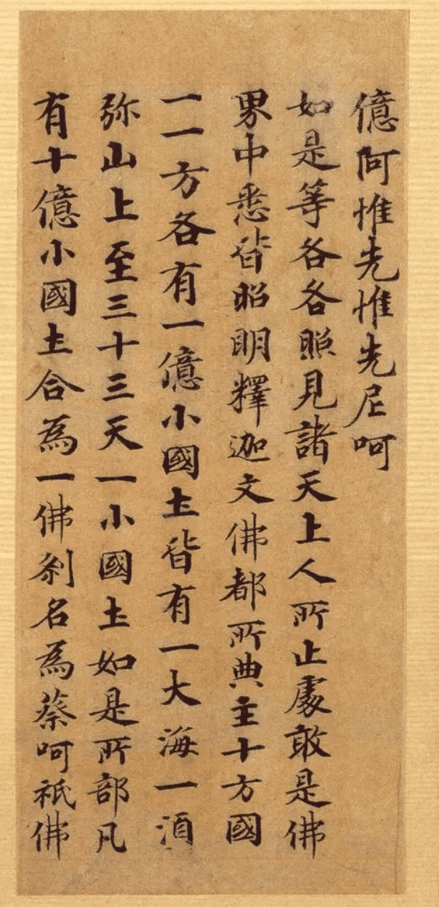
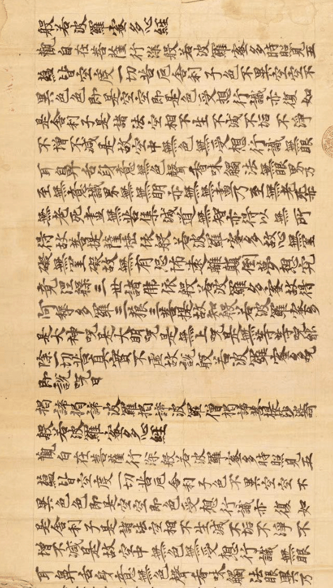
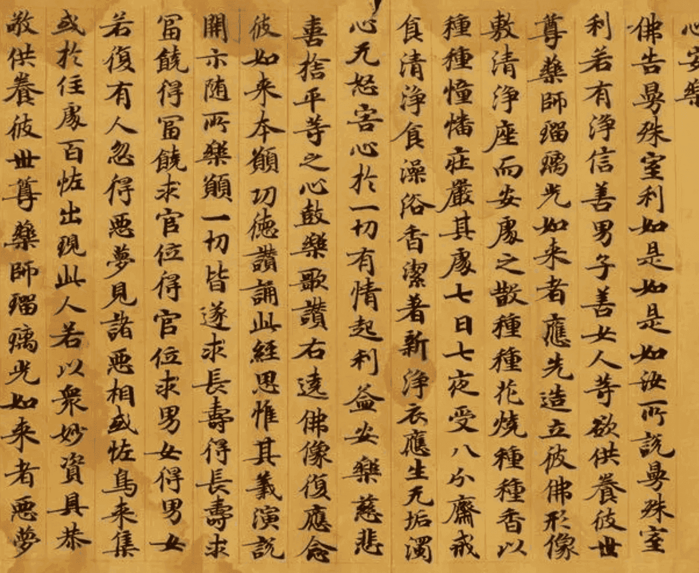
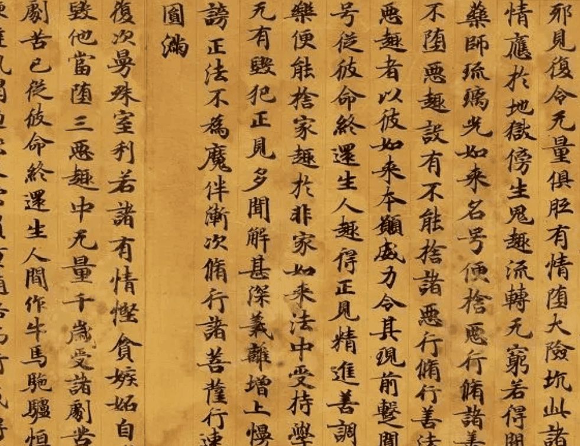
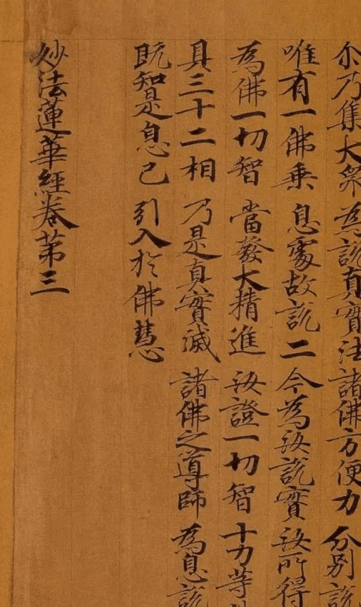
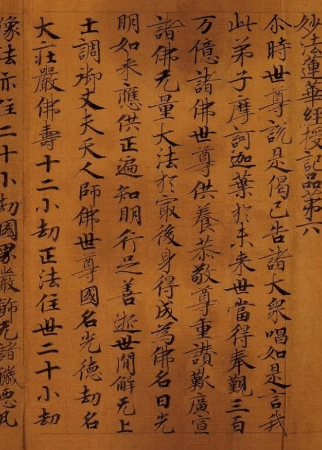

藏经洞文献(Tibetan Scripture Cave Documents)
-

敦煌写经
所属年代: 北魏到五代
敦煌写经是中国古文献中的瑰宝，自1900年敦煌写经卷在敦煌藏经洞被发现后，密藏多年的敦煌文献随即流散，许多完整的写经卷均被国外的探险家所劫掠。直到1910年，清朝学部才将劫余部分运抵北京。
-

般若波罗蜜多经
所属年代: 唐代（公元618年-907年）
敦煌市档案馆所保存的12件唐代古藏文《敦煌写经》中，《般若波罗蜜多经》共有7件，梵夹装，纸张展开后长71厘米，宽20厘米；有部分残缺。《十万般若波罗蜜多经》共有2件，梵夹装，纸张展开后长73厘米。
-

药师琉璃光如来本愿功德经
所属年代: 北魏到五代
药师琉璃光如来是佛教中的一尊佛陀，被认为拥有特殊的医疗和治愈力量，被信仰为医药菩萨。这部经典描述了药师佛的愿望和力量，以及信徒如何通过信仰和忏悔获得庇佑。 敦煌莫高窟保存了大量佛教文献。
-

药师琉璃光如来本愿功德经
所属年代: 北魏到五代
敦煌莫高窟藏经洞发现的写经，上起魏晋，下至宋元，其中的大部分是唐代的写经卷子。历代抄写经书的人员，大多出自经生、书手和善书的僧人，他们有的受人雇佣，有的自愿抄写。 抄写经书意在文字，以无讹为是。
-

妙法莲华经
所属年代: 北魏到五代
唐代书法崇尚“王体”，在敦煌石室中也曾藏有王羲之的《瞻近帖》、《龙保帖》，智永的《真草千字文残卷》等名作临本，虽数量不多，且有残缺，但为我们提供了一定佐证。然而，写经书法正是在这样的环境中显现风格，因意在文字，又不似王书飘逸，反有一种严劲刻厉之美。从出土实物来看，唐代敦煌写经大都结体雅正、笔力劲挺
-

真草千字文残卷
所属年代: 北魏到五代
《真草千字文残卷》虽数量不多，且有残缺，但为我们提供了一定佐证。然而，写经书法正是在这样的环境中显现风格，因意在文字，又不似王书飘逸，反有一种严劲刻厉之美。从出土实物来看，唐代敦煌写经大都结体雅正、笔力劲挺，与欧阳询、虞世南风格近同。